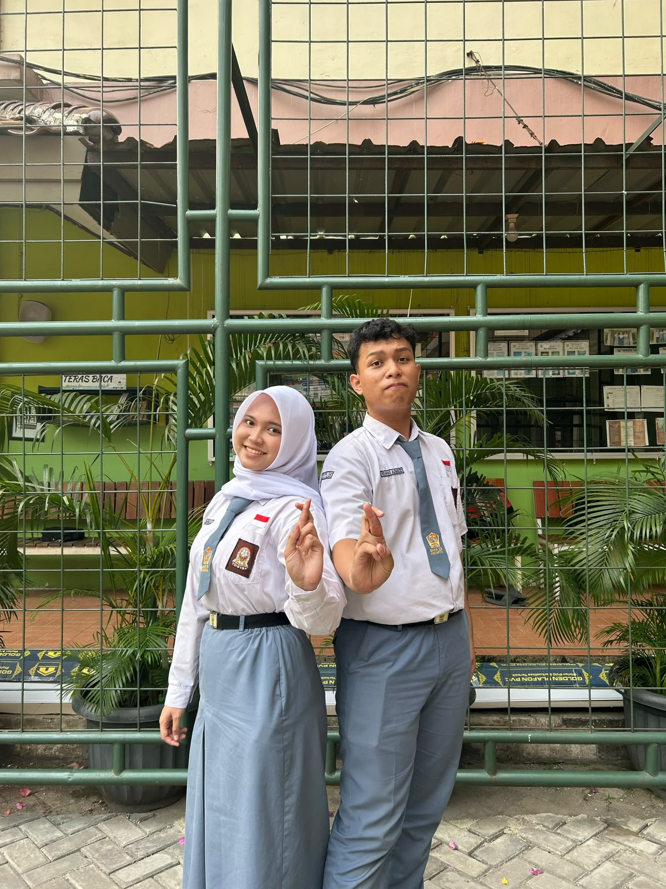

Terikat Dalam
Aspirasi,
Bergerak Dalam
Aksi!
🚀 Semangat KANE : Kawal Aspirasi, Nyatakan Eksistensi! Saatnya perwakilan kelas menjadi jembatan nyata antara siswa, ekskul, dan sekolah.

BINTANY & REVANO
SMAN 29 JAKARTA • PERIODE 2026/2027
Profil Kandidat Paslon 02
Dua figur berdedikasi, siap memimpin dan menyuarakan aspirasimu
Visi & Misi Kami
"Mewujudkan inklusivitas dan progresivitas bagi SMAN 29 Jakarta dengan membangun semangat KANE (Kawal Aspirasi, Nyatakan Eksistensi) sehingga menciptakan warga sekolah yang berkarakter, berprestasi, serta berkontribusi bagi sekolah dan lingkungan."
4 PILAR Misi Paslon 02:
Program Kerja Unggulan
Bukan omong kosong, berikut program konkret untuk SMAN 29 Jakarta
Hitung Mundur Pemilihan MPK SMAN 29
Pastikan suaramu terdaftar di TPS Sekolah! Jangan Golput!